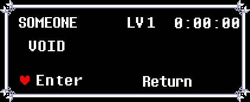

This website conatins infomation about all content realated to the DELTARUNE inspired TTRPG: Paradise lost
If you want to join the adventure yourself, click on the SAVE file below and you will be taken to the LATEST campaign, if you want to see past (archived) campaigns or see splinter campaigns made by participants, click the CAMPAIGNS TAB.

PARADISE LOST: Chapter 1 Recap (Credit to WDG)
CHAPTER ONE - “UNCHARTED DEPTHS”
After the PRELIMINARY TESTING, a glitch of an unknown cause swapped Gaster with a different variant of himself, simply called “ASTER”
This new variant attempted to restructure the path of the ANGELs, but was cut short as FRIEND intervened and sent everyone hurtling into the void
The ANGELs found themselves free of any path, and began exploring the DEPTHS, the void between worlds under Gaster’s dominion
After observing a strange structure floating in the void (A gargantuan white bubble with equally giant chains attached to it leading off into the distance) and FIGHTing various TITAN SPAWN, they arrived at a towering citadel made entirely of a smooth, black material, in which they discovered an Egg and then ascended on a lift to a throne room.
Inside, instead of a throne room, they found a knightly figure covered in plate armor nailed to a cross. Once he was freed, he introduced himself as Delta, a former paladin of a deceptive deity called Mirical.
He knew something the players didn’t: Mirical was, in fact, the EYE OF GOD in disguise